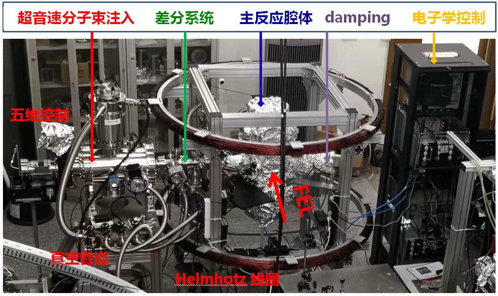
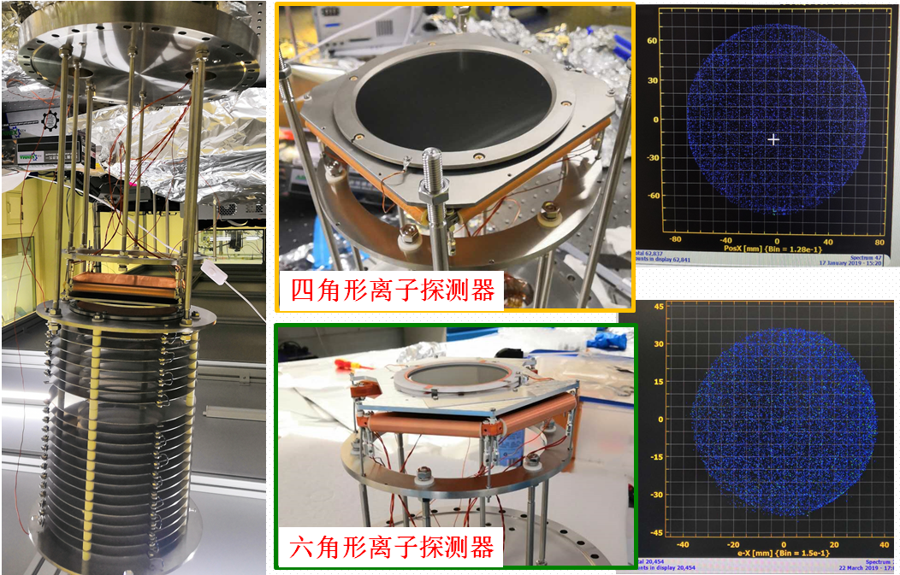
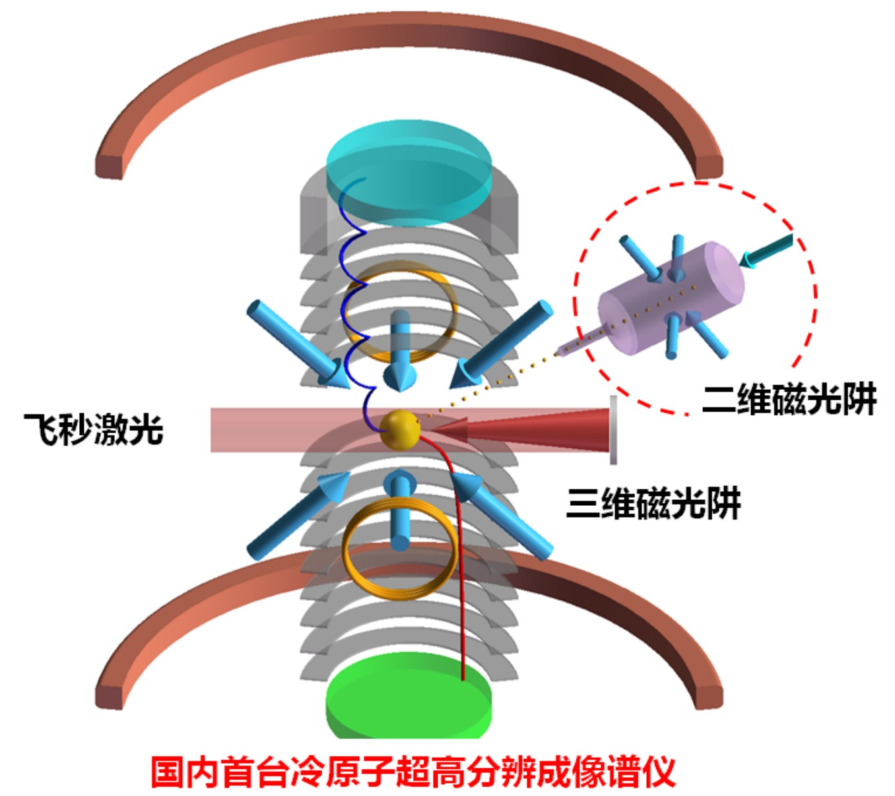
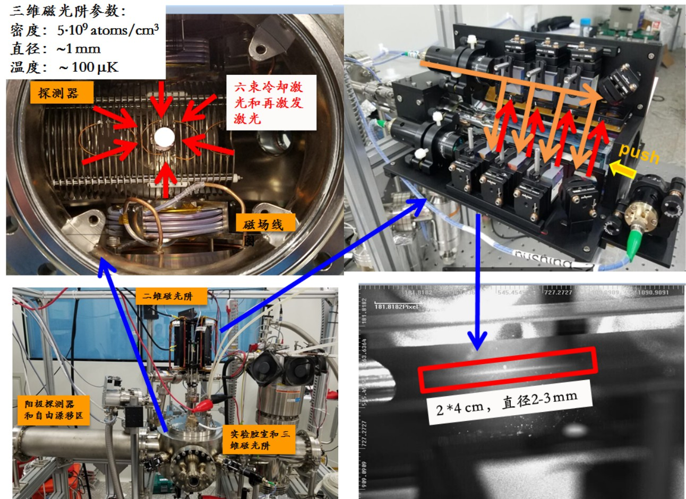
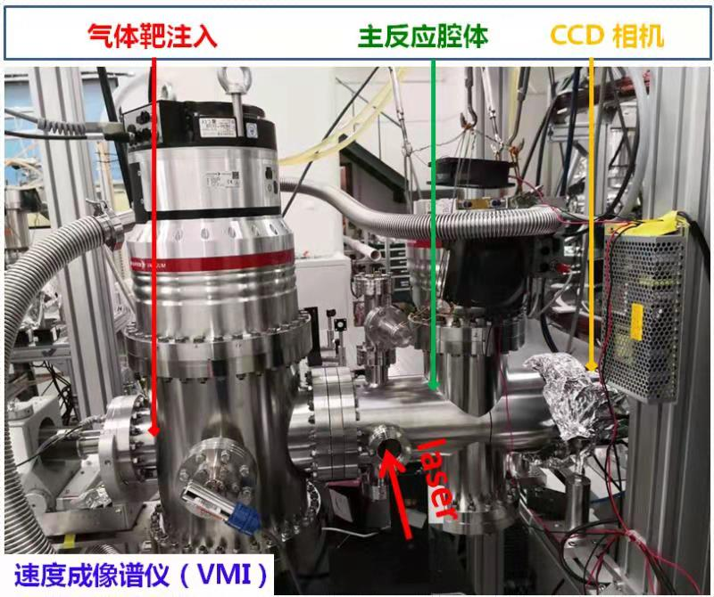
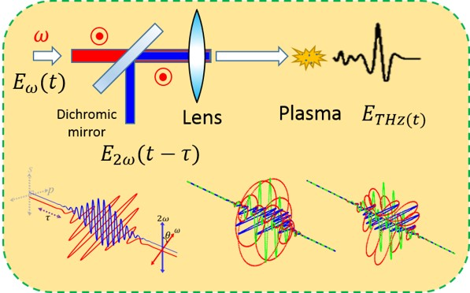
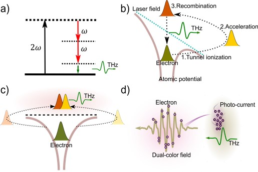
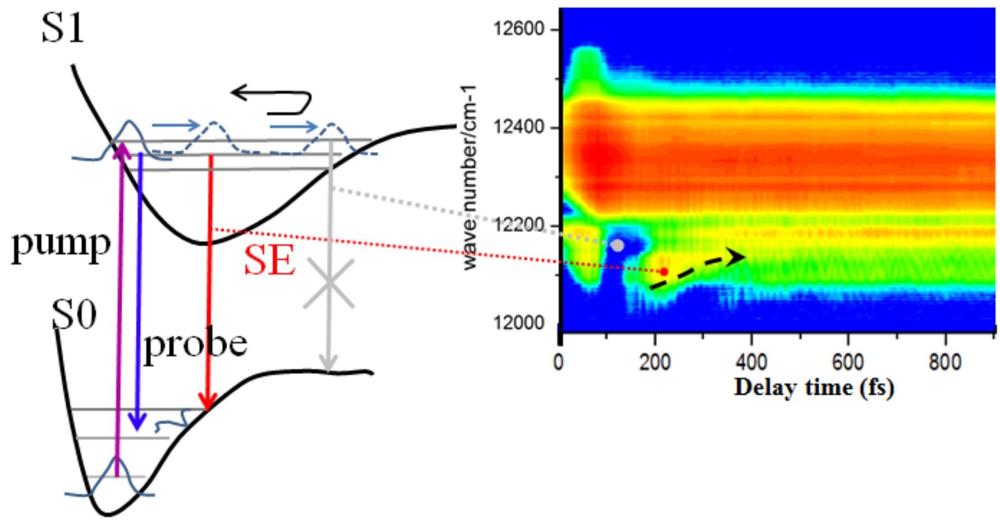

research
首页 > 研究方向
1. 自由电子激光在原子分子物理中应用

研究目标：利用高重复频率自由电子激光(FELs)，在飞秒时间尺度和原子空间尺度上，实现电子、离子、光子的全测量成像，直接观察单原子单分子反应过程，探索全新的少体量子规律，为复杂体系研究奠定认知基础，同时对激光脉冲自身特性进行标定。具体包括：一、X-ray多光子非线性过程，如内壳层激发电离，Auger过程，超激发态，中空原子，非线性康布顿散射，原子X-ray 激光产生，X-ray激光特性的测量等；二、电子原子相干量子态的纠缠与演化，如分子坐标下原子原子纠缠、电子电子纠缠，电子与原子核耦合等；三、分子反应的操纵与控制，如分子间能量转移，电荷转移，成键与断键，中间态控制等；四、单分子结构成像，如量子态演化的分子结构影像（振动量子态，旋转量子态）等。 实验方法：
原子分子反应成像实验站由多功能成像系统和复合电子离子磁瓶谱仪系统两个分系统构成。利用X射线自由电子激光(FELs)光源，主要探测手段包括反应符合成像（MOTReMi / ColTRIMS）、速度成像（VMI）、高分辨磁瓶成像、CCD光衍射成像、光电子能谱仪等。对原子分子解离后的离子、电子和散射的光子进行符合探测，并结合泵浦探测技术，测量原子分子动力学过程。 研究成果：
研制了国际上第一代自由电子激光场中有时间分辨的分裂镜反应显微成像谱仪，实现极紫外泵浦/极紫外探测多体成像探测技术，提供一个在极紫外波段探索原子分子内在超快动力学过程的崭新手段；成功观察到简单乙炔分子离子中也存在飞秒原子迁移的新物理机制，解决了困扰人们40年之久，由诺贝尔化学奖获得者G. Herzberg 教授提出的疑问。让人们看到极紫外激光在超快化学反应领域的诱人应用前景，实现在极紫外飞秒时间尺度上直接观看分子内在化学反应过程的梦想；成功完成原理性验证实验—D2分子内的原子核波包振动，对分子中这个经典的、最快的分子运动进行时间标定（22 fs）。 通过对分子一系列研究，对进一步控制和操纵分子内超快核波包运动、解离电离等分子动力学过程奠定实验基础；提出强极紫外激光场中分子多光子非线性吸收电离新机制—多光子非顺序吸收电离解离，揭示了崭新的、丰富的分子电离空间分布图像；建立原子非顺序双光子双电离“背靠背”电子强关联电离的新机制，配合单光子（同步辐射）和多光子（强红外激光场）双电离机制，构建了电子双电离关联的完整新机制图像。 现在正在承担建设上海软X与硬X射线自由电子激光原子分子实验站的建设工作，预计于2019年对用户开放。
2. 飞秒红外强场动力学研究

 研究目标：利用冷原子激光冷却技术进样，采用反应显微谱仪进行电子离子符合动量成像探测， 结合光吸收成像荧光成像技术， 研制锶原子冷靶光子电子离子高分辨成像探测装置。 克服了常温下为固态原子反冲离子动量测量分辨率差的难题， 将冷原子离子动量分辨率提高了两个数量级， 提供了高分辨双电子原子的精准测量， 可用于强场物理， 冷原子动力学， 冷原子里德堡长程关联以及冷等离子演化的研究。 激光场中的高分辨动量分布成像测量是全面研究冷原子量子特性的新思路，是原子分子碰撞极限精密测量的新方法。 结合泵浦探测手段， 可以实现有时间、 空间、 动量分辨的全测量， 可以让人们全面认识和利用金属元素微观量子体系的特性。 实验方法：
金属元素（ 如铷原子） 常温下为固态， 要想研究单个金属原子内的物理过程， 必须先把它们气化（ 加热到几十到上千度）， 导入反应腔体。 这里采用磁光阱（ MOT） 冷原子气体靶， 研发冷原子冷靶光子电子离子高分辨多功能成像谱仪， 实现激光场中原子的电子电子、 电子离子符合的高分辨动量成像以及光子吸收与荧光成像探测。 重点解决原子激光锁频， 高蒸发温度锶原子产生与高密度束流下高真空的实现， 大装置上特殊环境中MOT的制备、 进样与稳定， MOT摄谱仪的时间与空间聚焦， 真空中摄谱仪均匀磁场和MOT梯度磁场的快速切换， 均匀磁场、梯度磁场、二维MOT和三维MOT冷却激光、飞秒激光以及数据采集系统的时序控制等关键技术。提供高密度、高准直、高装载率的二维MOT、 二维MOT光学粘团和三维MOT三种冷原子气体靶， 离子动量分辨率提高两个数量级， 实现超高动量分辨的电子离子符合探测。 这个探测装置又被称之MOTReMi（ 磁光阱反应显微谱仪）， 设计理念和实物装置见图示。 研究成果：
成功研发了首台飞秒强激光场中的超高动量分辨冷原子反应成像谱仪。 完成仪器设计加工和初期的测试工作， 先后实现激光锁频， 反应腔体测试， 数据采集软件撰写， 2D 磁光阱和 3D 磁光阱。 原子靶动量展宽减少高达六个数量级， 可提供二维连续靶（ 107 atoms/cm3） 和三维靶（ 109 atoms/cm3） 两种靶源， 离子的反冲离子动量分辨率小于 0.2 原子单位， 时间飞行分辨提高 50 倍！成功实现重离子动量分布的高精度探测。

3. 太赫兹激光产生与应用

关于太赫兹激光：早期太赫兹在不同的领域有不同的名称，在光学领域被称为远红外，而在电子学领域，则称其为亚毫米波、超微波等。在20世纪80年代中期之前，太赫兹波段两侧的红外和微波技术发展相对比较成熟，但是人们对太赫兹波段的认识仍然非常有限，形成了所谓的“THz Gap”。 2004年，美国政府将THz科技评为“改变未来世界的十大技术”之一，而日本于2005年1月8日更是将THz技术列为“国家支柱十大重点战略目标”之首，大力进行研发。
太赫兹激光的应用：
太赫兹的独特性能给通信（宽带通信）、雷达、电子对抗、电磁武器、天文学、医学成像（无标记的基因检查、细胞水平的成像）、无损检测、安全检查（生化物的检查）等领域带来了深远的影响。由于太赫兹的频率很高，所以其空间分辨率也很高；又由于它的脉冲很短（皮秒量级）所以具有很高的时间分辨率。 研究成果：
目前我们实验室拥有一套Coherent钛宝石飞秒激器，用于产生强太赫兹脉冲，并将其利用到强场物理、超快THz和激光驱动带电粒子加速等方面的物理研究。 为了获得强度高，带宽大的THz脉冲，实验上我们利用双色飞秒激光场聚焦成丝诱发产生气体等离子体的方式产生THz波，采用偏振敏感自由空间电光取样的方式来测量太赫兹时域光谱，获取完整的THz电场信息。 实验上通过改变双色场的偏振态以及时间延迟来系统研究THz波的产生对于双色飞秒激光场偏振态以及相位延迟的依赖特性，并对实验结果进行详细的理论模拟对比，探索THz波产生过程背后所涉及的物理过程，解决科学上对于气体等离子体产生太赫兹波机理的争议，对实验上产生更高强度的THz脉冲提供理论指导，寻求最佳的太赫兹产生效率。 目前我们已经成功搭建了基于双色场产生THz脉冲的实验装置，并展开相关理论模拟分析。同时我们也实现了光泵浦太赫兹探测超快探测平台的搭建，旨在利用THz开展对（纳米）半导体载流子超快动力学方面的研究。
4. 纳米量子材料研究与应用

研究目标：纳米材料和能源材料表征与原位观测， 材料超快动力学过程等。研究方法：
纳米材料量子特性实验平台利用强红外飞秒激光，产生高信噪比的太赫兹信号和连续光信号， 建立起连续光瞬态吸收泵浦/探测技术和红外与太赫兹泵浦/探测技术。 这些多种泵浦/探测手段成为探索纳米半导体量子材料的有力手段。研究成果：
近期我们成功观测到染料分子 IR144 中的飞秒超快分子波包运动，振动能级间的能量传递，激光强度依赖的非线性能级布居等过程， 该结果已经发表到美国重要化学物理期刊上（ Chem. Phys. 476, 17–22 (2016)）。
5. 非微扰量子动力学理论
量子力学框架下，理论计算所得电子波包、分子核波包会随着时间不断演化，它们的动力学过程蕴含了原子分子领域中微观世界的一切信息，从波函数能够计算得到实验上可观测的物理量，包括光电子谱、光谱，对理论与实验结果的比较为我们打开了一面窥探微观世界的窗口。
重点研究方向：
- 发展强激光场下的量子动力学过程的量子与半经典理论，通过比较各类光电子谱及光谱的实验结果，研究各类强场现象，包括阈上电离、高次谐波产生、太赫兹波产生等，并为实验设计提供新的研究策略。
- 非线性光谱学方法的理论研究，从量子动力学研究出发，利用对瞬态吸收谱、多维光谱的计算，提出新的探测技术或优化方案，对重要物理量进行重构的方案，或实现具有特定功能的逻辑器件。
- 计算物理，发展含时薛定谔方程数值求解方法、以及形式上类似路径积分的半经典轨线理论，探索量子动力学过程。
代表工作：结合极紫外（XUV）与太赫兹波（THz）探测场，用于研究超快相干过程的密度矩阵重构方案 [Phys. Rev. Lett. 121, 113201 (2018)]
量子相干是量子力学的基本概念之一，从毫秒尺度下精心制备的冷原子，到阿秒尺度下原子的空穴动力学，相干动力学过程在各个时间尺度上无处不在。例如，在简单的原子分子体系中，光电离过程下扰动内壳层电子可制备相干空穴波包，随后会在1 fs内发生退相干，该过程强烈依赖于光电子-母离子间的关联，显著影响相干空穴波包的演化。为了探索这类基本物理过程，我们从强场理论出发，提出一种实验方案，利用飞秒极紫外（XUV）与太赫兹（THz）脉冲组合场获取被测系统的光电子谱，可提取时间演化密度矩阵元，研究现实中开放量子系统的超快相干动力学。我们证明了被测系统的含时密度矩阵元可被直接映射到对应动量的时变光电子谱峰。通过观测光电子谱中THz增强相干信号的振荡，可确定任意时刻量子态间的相对相位。利用现有飞秒脉冲条件，可实现对阿秒尺度上的超快相干振荡的分辨。该工作将为未来自由电子激光装置上实验方案的设计、研究领域的扩展提供指导，同时为提高桌面装置超快实验时间分辨率提供新思路。